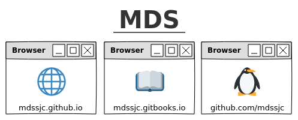

Lançamento do Eclipse
Dia 22/06 foi lançado o Eclipse Neon

Informativo
O repositório MDS, composto do aplicativo Citações, Site, Livro e materiais de Estudo, completa mais de 1000 commits em Maio/16.
HTML5
Estamos prontos!
Novidades
- 01/07
- 24/06
-
Alteração do layout.
Atualização da lista de sites, incluindo a seção Ferramentas.
Atualização da página Citaçoes.
Atualização do Livro. - 17/06
-
Alteração do layout.
Inclusão da categoria Geral na lista de sites.
Inclusão da página Sobre... - 10/06
-
Melhorias no layout com W3.CSS.
Página com informações do Citações.
Listagem de sites recomendados. - 06/06
- Início da etapa do aplicativo Citações, acompanhar repositório.
Cunningham & Cunningham
c2.com
Wiki de artigos sobre computação
Integração
@mds: git * <enter>
Livros

Pragmatic Unit Testing in Java 8 with JUnit
by Jeff Langr, with Andy Hunt and Dave Thomas